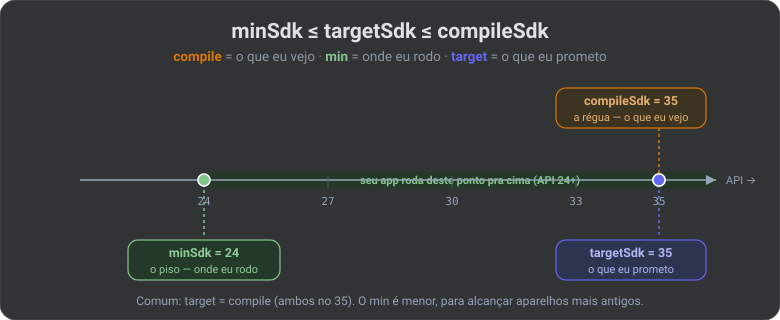
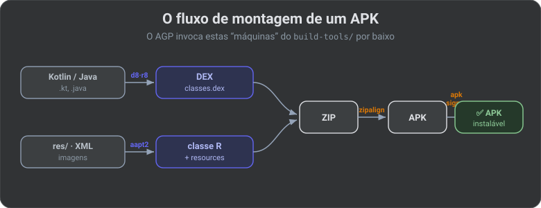
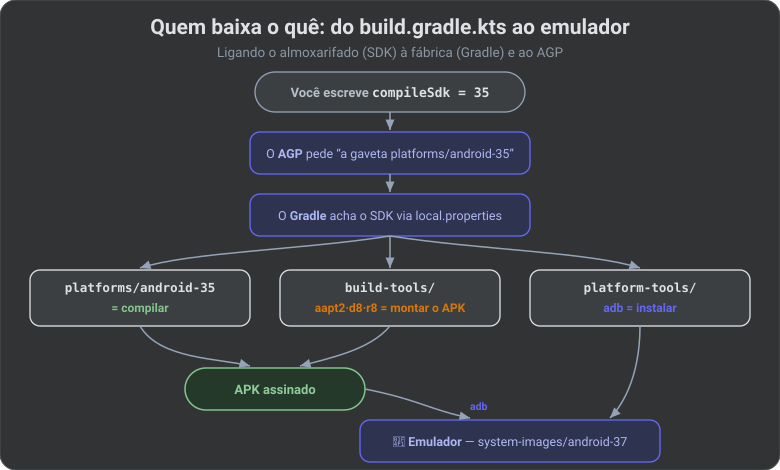

🧰 Android SDK & Setup: O Almoxarifado da Fábrica (2026)
📚 Trilogia do build Android — leia nesta ordem:
- 🐘 Gradle — a fábrica que monta o app.
- 🤖 AGP — o especialista que ensina a fábrica a falar Android (seção no artigo do Gradle).
- 🧰 Android SDK (este artigo) — o almoxarifado de ferramentas e moldes.
Se o Gradle é a fábrica e o AGP é o especialista que a comanda, o Android SDK é o almoxarifado: o galpão cheio de máquinas, moldes e ferramentas que o AGP puxa da prateleira na hora de montar o app.
Este é o lugar de toda a confusão clássica: "que diferença tem compileSdk de targetSdk?", "por que meu emulador é API 37 mas eu compilo em 35?", "o que raios é aapt?". No fim você vai olhar ~/Library/Android/sdk e saber o que tem em cada gaveta.
📌 Aterrando no ambiente real deste projeto (o que estava instalado ao escrever este guia):
- SDK:
/Users/eduardolimanascimento/Library/Android/sdk- Plataformas (para compilar):
android-35,android-36.1- System image (para o emulador rodar):
android-37.1- Emulador criado (AVD):
Pixel_9a- Projeto:
compileSdk = 35,minSdk = 24,targetSdk = 35
1. O que você instala quando "instala o SDK"
Instalar o Android SDK não é instalar um programa único. É montar um guarda-roupa de gavetas, cada uma baixada e versionada de forma independente. Você quase nunca precisa de todas — mas precisa saber pra que serve cada uma.
~/Library/Android/sdk/
├── platforms/
│ ├── android-35/ ← o MOLDE para COMPILAR (android.jar) ┐ confusão
│ └── android-36.1/ │ nº 1
├── system-images/ │
│ └── android-37.1/ ← o ANDROID que RODA no emulador ┘
├── build-tools/
│ └── 35.0.0/ ← as MÁQUINAS: aapt2, d8, r8, apksigner
├── platform-tools/ ← adb, fastboot (falam com o aparelho)
├── emulator/ ← o emulador em si (a máquina virtual)
├── cmdline-tools/latest/ ← sdkmanager, avdmanager (instalar via terminal)
└── ndk/, cmake/ ← só se você usar código C/C++
| Gaveta | O que guarda | Você mexe? |
|---|---|---|
platforms/android-XX/ |
O molde de compilação: o android.jar de cada versão |
Sim — é o compileSdk |
build-tools/XX.X.X/ |
As máquinas: aapt2, d8/r8, zipalign, apksigner |
Raramente (o AGP escolhe) |
platform-tools/ |
Ferramentas que falam com o aparelho: adb |
Sim — adb no dia a dia |
system-images/android-XX/ |
O Android inteiro que roda dentro do emulador | Sim — ao criar emulador |
emulator/ |
O emulador (a máquina virtual que roda a system image) | Indireto |
cmdline-tools/latest/ |
sdkmanager e avdmanager (instalam gavetas via terminal) |
Sim, em CI/setup |
🧠 Termo —
android.jar: um arquivo que contém as assinaturas de todas as APIs daquela versão do Android (os nomes das classes e métodos, sem o código de verdade). É contra ele que seu código compila — como um "dicionário do que existe no Android 15".
🔒 Visão Specialist: o
local.properties(que não vai pro Git) tem a linhasdk.dir=...dizendo ao Gradle onde fica o almoxarifado. Em CI usa-se a variável de ambienteANDROID_HOMEno lugar. Mesma informação, canal diferente.
2. A confusão nº 1: platforms/ ≠ system-images/
Essas duas gavetas têm nomes parecidos (android-35, android-37) e é aqui que nasce 90% da confusão. São coisas opostas:
COMPILAR (na sua máquina) RODAR (no emulador)
┌───────────────────────┐ ┌───────────────────────┐
│ platforms/ │ │ system-images/ │
│ android-35 │ │ android-37 │
│ │ │ │
│ = android.jar │ │ = o Android inteiro │
│ (o dicionário │ │ (kernel, apps, tela)│
│ de APIs) │ │ │
│ │ │ roda dentro do │
│ usado pelo AGP │ │ EMULADOR │
└───────────────────────┘ └───────────────────────┘
ligado a: compileSdk ligado a: o AVD
platforms/android-XX |
system-images/android-XX |
|
|---|---|---|
| Serve para | Compilar o app | Rodar o app (emulador) |
| Contém | android.jar — assinaturas das APIs |
O Android de verdade |
| Quem usa | O AGP na sua máquina | O emulador |
| Liga-se a | compileSdk |
O AVD (o emulador criado) |
| Tamanho | Pequeno (~MBs) | Gigante (~GBs) |
Traduzindo pro seu caso: você compila contra android-35 (platform) e roda num emulador android-37 (system image). Não há contradição — são gavetas diferentes, para fases diferentes. Uma é a régua; a outra é o celular fake.
🧠 Analogia: a
platformé o manual + molde de um carro (contra o que o engenheiro projeta). Asystem-imageé uma pista com um carro real rodando. Projetar contra o molde de 2024 e testar numa pista de 2026 é perfeitamente normal.
3. API Level: o número que amarra tudo
Toda versão do Android tem três nomes, e o build só liga para um: o API Level (um inteiro que só cresce).
API: 24 26 29 31 33 34 35 36
│ │ │ │ │ │ │ │
Android7 Android8 Android10 Android12 A13 A14 A15 A16
(2016) (Oreo) (fim dos (2021) (Tira- (Upside (Vanilla(Baklava
doces) misu) Down) IceCr.) 2025)
▲ ▲
seu minSdk seu compileSdk/target
| API Level | Versão comercial | Codinome | Ano |
|---|---|---|---|
| 24 | Android 7.0 | Nougat | 2016 |
| 26 | Android 8.0 | Oreo | 2017 |
| 29 | Android 10 | (fim dos doces) | 2019 |
| 31 | Android 12 | Snow Cone | 2021 |
| 33 | Android 13 | Tiramisu | 2022 |
| 34 | Android 14 | Upside Down Cake | 2023 |
| 35 | Android 15 | Vanilla Ice Cream | 2024 |
| 36 | Android 16 | Baklava | 2025 |
Quando você lê compileSdk = 35, traduza: "API Level 35" = "Android 15". O número comercial ("Android 15") é para humanos; o API Level ("35") é para o build.
4. A confusão nº 2: compileSdk vs minSdk vs targetSdk
Os três aparecem juntos e parecem sinônimos. Não são — cada um responde a uma pergunta diferente:
android {
compileSdk = 35 // (A) COM QUAL kit de APIs eu compilo?
defaultConfig {
minSdk = 24 // (B) QUAL o Android mais VELHO que roda meu app?
targetSdk = 35 // (C) Para qual versão eu TESTEI e me comprometo?
}
}
API 24 ──────────────────────────── 35 ──────► futuro
│ │
│◄────── seu app RODA aqui ─────────►│ (limite: você não pode
│ │ usar APIs acima do compileSdk)
▲ ▲ ▲
minSdk (aparelhos compileSdk
(o piso) reais) targetSdk
(A) compileSdk — a régua de compilação
"Quais APIs o compilador conhece." Se você usa uma função que só existe no Android 15, precisa de compileSdk = 35. Puxa a gaveta platforms/android-35. Não afeta em quais celulares o app roda — só o que o compilador enxerga. Regra: mantenha sempre no mais recente estável.
(B) minSdk — o piso de compatibilidade
"O Android mais antigo em que o app instala." minSdk = 24 = "funciona a partir do Android 7.0". Não baixa nada. Quanto menor, mais aparelhos você alcança — mas mais código de compatibilidade. Usar uma API acima do minSdk exige checar em runtime:
if (Build.VERSION.SDK_INT >= Build.VERSION_CODES.S) { // só no Android 12+
// usa a API nova aqui
}
(C) targetSdk — a declaração de intenção
"A versão para a qual eu testei." O Android usa isso para decidir se liga mudanças de comportamento novas para o seu app ou mantém o modo de compatibilidade. A Play Store exige um targetSdk recente (o mínimo sobe todo ano). Regra: mantenha alto, junto do compileSdk.
A Regra de Ouro

🧠 Guarde a frase:
compileé o que eu vejo ·miné onde eu rodo ·targeté o que eu prometo.
5. O que tem dentro do build-tools/: as máquinas da montagem
Você quase nunca chama essas ferramentas na mão — o AGP as invoca por baixo. Mas conhecer os nomes muda o jogo quando um erro de build aparece. Este é o fluxo de montagem de um APK:

| Máquina | O que faz | Momento |
|---|---|---|
aapt2 |
Android Asset Packaging Tool. Compila os recursos (res/, XML, imagens) e gera a classe R (aquela R.string.app_name) |
Início |
d8 |
Converte o bytecode Java/Kotlin em DEX — o formato que o Android executa | Meio |
r8 |
O d8 turbinado: gera DEX e encolhe/ofusca o código (liga com isMinifyEnabled = true) |
Meio (release) |
zipalign |
Alinha os bytes do APK para carregar mais rápido na memória | Fim |
apksigner |
Assina o APK com sua chave — sem assinatura, nenhum Android instala | Fim |
🧠 Termos — bytecode, DEX, ART:
- bytecode: o código intermediário que o compilador Kotlin/Java gera (
.class), antes de virar algo que o aparelho executa.- DEX (Dalvik Executable): o formato que o Android realmente roda — o
d8traduz o bytecode para ele.- ART (Android Runtime): a "máquina" dentro do celular que executa o DEX.
🔒 Visão Specialist: o
./gradlew installDebug(visto no artigo do Gradle) usa essas máquinas + oadb. Quando o build falha com um erro deaapt2oud8, você agora sabe em qual etapa foi.
6. adb: seu telefone direto com o aparelho
O adb (Android Debug Bridge) mora em platform-tools/ e é a ferramenta que você vai digitar no terminal. É a ponte entre o seu Mac e o device (emulador ou celular real por USB).
Seu Mac ◄──── adb ────► Emulador / Celular
(comandos) (instala, lê logs, shell)
| Comando | O que faz |
|---|---|
adb devices |
Lista aparelhos conectados. Sempre o primeiro quando algo não aparece |
adb install app-debug.apk |
Instala um APK manualmente |
adb uninstall com.eduardo.nexushub |
Desinstala pelo applicationId |
adb logcat |
O stream de logs em tempo real (seus Log.d aparecem aqui) |
adb shell |
Abre um shell Linux dentro do aparelho |
adb shell pm list packages |
Lista todos os apps instalados |
🧠 Termo — logcat: o sistema de logs do Android. Tudo que seu app escreve com
Log.d(...),Log.e(...)etc. sai por aqui — é a principal ferramenta de depuração.
7. Emuladores: qual API escolher (o fim da paralisia)
O emulador é independente do compileSdk. Ele só precisa rodar uma system image com API ≥ minSdk. Criar um emulador = criar um AVD (Android Virtual Device): "modelo de aparelho (Pixel 9a) + system image (API 37) + config".
AVD "Pixel_9a"
┌────────────────────────────────┐
│ modelo: Pixel 9a (tela, RAM) │
│ + │
│ system image: android-37 │ ← precisa ser ≥ minSdk (24) ✅
│ + │
│ arquitetura: arm64-v8a │ ← Apple Silicon
└────────────────────────────────┘
7.1 Sabores de system image (importa!)
Ao baixar uma system image você escolhe uma variante:
| Variante | Play Store? | Google Apps? | Quando usar |
|---|---|---|---|
| Google Play | ✅ | ✅ | Precisa logar em conta Google, testar billing/mapas |
| Google APIs | ❌ | ✅ (serviços, sem loja) | Padrão do dia a dia — tem Play Services, permite adb root |
| AOSP (sem sufixo) | ❌ | ❌ | Android puro, testes de baixo nível |
E a arquitetura: no seu Mac (Apple Silicon / chip M) escolha imagens arm64-v8a. As x86_64 são para PCs Intel e rodam lentas (ou nem rodam) via emulação.
🧠 Termos — AOSP e arquitetura: AOSP (Android Open Source Project) é o Android puro, sem os apps do Google. Arquitetura (
arm64-v8a,x86_64) é o "tipo de processador" que a imagem emula — tem que combinar com o do seu Mac para ser rápido.
7.2 A receita prática (pare de sofrer)
Tenha dois emuladores e acabou a dúvida:
| Emulador | API | Para quê |
|---|---|---|
| Principal | Uma recente (API 35, ou o 37 que você já tem) | Desenvolvimento do dia a dia |
| Piso | Igual ao seu minSdk (API 24) |
Testar "meu app quebra no celular velho?" antes de publicar |
O resto (28, 30, 33…) só quando um bug específico pedir. Não precisa colecionar emulador.
No seu setup, o AVD
Pixel_9a(API 37) serve como o "Principal". Falta só, um dia, um AVD API 24 para o teste de piso.
8. sdkmanager & avdmanager: o almoxarifado pelo terminal
Tudo o que o Android Studio faz na tela "SDK Manager" tem equivalente de terminal — é o que o CI usa (CI não clica em botão). Ambos vivem em cmdline-tools/latest/bin/.
# Ver tudo que existe e o que já está instalado
sdkmanager --list
# Instalar uma plataforma (compilar) + uma system image (emular)
sdkmanager "platforms;android-35" "system-images;android-35;google_apis;arm64-v8a"
# Aceitar licenças (obrigatório em CI antes de qualquer build)
sdkmanager --licenses
# Criar um emulador (AVD) a partir de uma system image baixada
avdmanager create avd -n Pixel_API35 \
-k "system-images;android-35;google_apis;arm64-v8a" \
--device "pixel_9a"
# Listar / apagar AVDs
avdmanager list avd
avdmanager delete avd -n Pixel_API35
🔒 Visão Specialist: em CI a sequência é sempre: baixar
cmdline-tools→sdkmanager --licenses→sdkmanagerinstala as gavetas exatas →./gradlew. Nada de Android Studio no servidor. Saber os IDs (platforms;android-35) é o que torna o build reprodutível.
9. O mapa final: quem-baixa-o-quê
Fechando o ciclo — ligando este almoxarifado à fábrica do Gradle e ao AGP:

compileSdkpuxaplatforms/.- AGP manda o
build-tools/(aapt2/d8/r8) montar. adb(platform-tools/) joga no emulador, que roda umasystem-images/.local.propertiesé o mapa que diz onde o almoxarifado fica.
📖 Colinha de sobrevivência
| Pergunta na sua cabeça | Resposta curta |
|---|---|
| "Contra o que eu compilo?" | compileSdk → gaveta platforms/ → sempre no mais recente |
| "Em que celulares roda?" | minSdk → não baixa nada → quanto menor, mais alcance |
| "O que a Play exige?" | targetSdk alto e recente |
| "Emulador 37 e compilo em 35, tá errado?" | Não. platforms (compilar) ≠ system-images (rodar) |
"O que gera a classe R?" |
aapt2 (dentro de build-tools/) |
| "Como falo com o device?" | adb (dentro de platform-tools/) |
| "Que emulador criar?" | Um recente + um no seu minSdk. Apple Silicon → arm64-v8a |
| "Onde o Gradle acha o SDK?" | local.properties (sdk.dir) local; ANDROID_HOME no CI |
| "Instalo gaveta sem o Studio?" | sdkmanager "platforms;android-35" |
📖 Glossário-relâmpago
| Termo | Em uma linha |
|---|---|
| SDK | O almoxarifado de ferramentas Android instalado na máquina. |
| API Level | O número inteiro de cada versão do Android (35 = Android 15). |
android.jar |
O "dicionário" de APIs contra o qual você compila (compileSdk). |
| platform | Gaveta para compilar (tem o android.jar). |
| system image | Gaveta para rodar (o Android inteiro, no emulador). |
| AVD | Um emulador configurado (aparelho + system image + specs). |
aapt2 |
Compila recursos e gera a classe R. |
d8 / DEX |
Converte bytecode no formato que o Android executa. |
r8 |
Encolhe + ofusca o código no release. |
adb |
A ponte de terminal entre seu Mac e o aparelho. |
| logcat | O fluxo de logs do Android (Log.d). |
| AOSP | Android puro, sem apps do Google. |
sdkmanager |
Instala gavetas do SDK pelo terminal. |
Companheiro do GRADLE_UNDER_THE_HOOD.md: a fábrica (Gradle) + o especialista (AGP) + o almoxarifado (SDK).